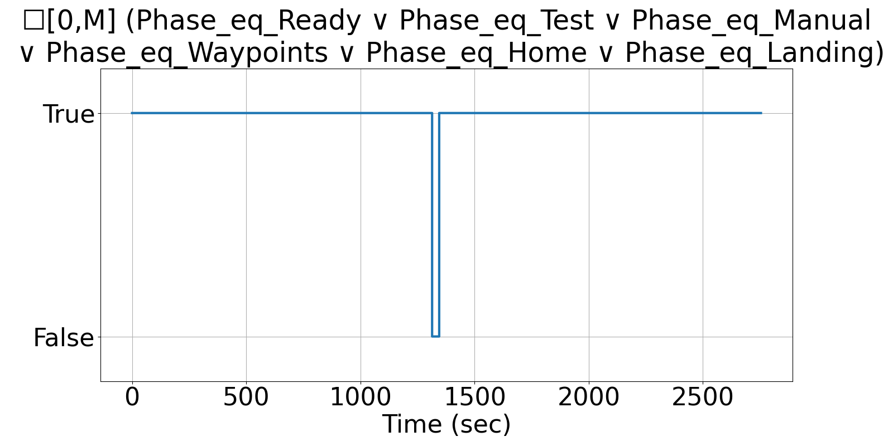

Integrating Runtime Verification into an
Automated UAS Traffic Management System
Matthew Cauwels, Abigail Hammer, Benjamin Hertz, Phillip H. Jones, Kristin Y. Rozier
This webpage contains supplementary specifications for "Integrating Runtime Verification into an
Automated UAS Traffic Management System" by M. Cauwels, A. Hammer, B. Hertz, P. H. Jones, and K. Y. Rozier
SB_UAS_11
Specification Description
The Phase of the UAS will be limited to the following strings at all instances: Ready, Test, Takeoff, Manual, Waypoints, Home, Landing
Signals Required
Phase
Boolean Conversion of Signals to Atomic Inputs
Phase_eq_Ready: Phase == Ready
Phase_eq_Test: Phase == Test
Phase_eq_Manual: Phase == Manual
Phase_eq_Waypoints: Phase == Waypoints
Phase_eq_Home: Phase == Home
Phase_eq_Landing: Phase == LandingMLTL Specification
☐[0,M] (Phase_eq_Ready ∨ Phase_eq_Test ∨ Phase_eq_Manual ∨ Phase_eq_Waypoints∨ Phase_eq_Home ∨ Phase_eq_Landing)
Fault Explanation
Phase is not one of predefined strings. Can only be Ready, Test, Manual, Waypoints, Home, or Landing
Additional Notes
Based on all possible states the UAS Phase can enter
Figures

